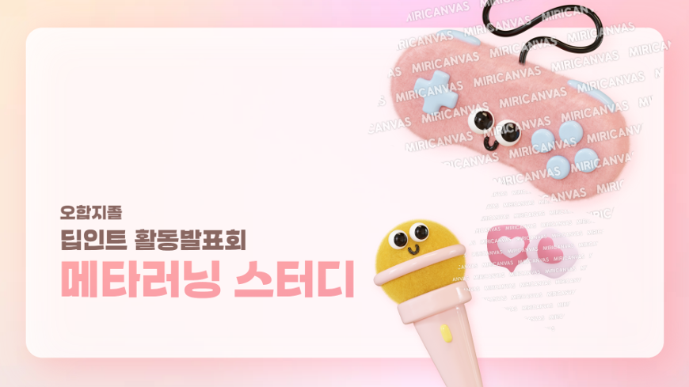
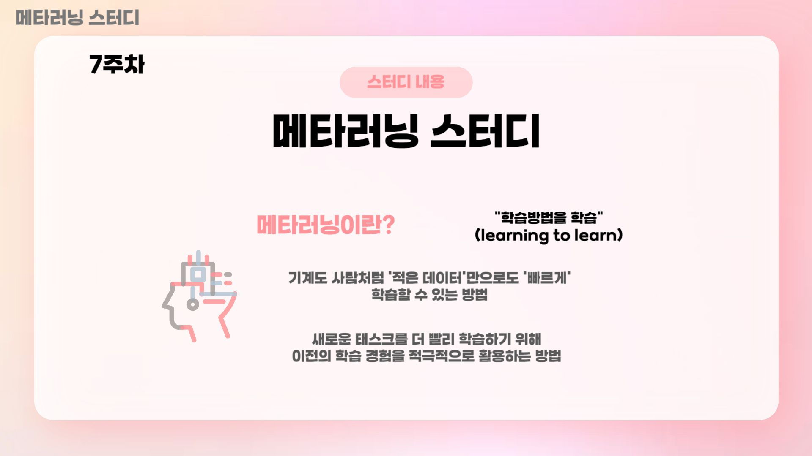
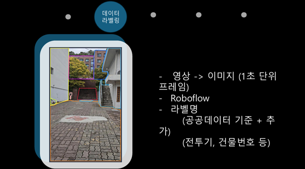

팀명: 오합지졸
메타러닝 스터디, 딥러닝 스터디 2개의 조로 나누어 활동을 진행하였습니다.


2024 마지막 학기가 끝난 후 겨울 방학 딥인트 내에서 두개의 조로 나눈 후 매일 코딩 스터디를 진행하고 있습니다.
주말을 제외한 매일, 특정 수준 범위 내에서 랜덤으로 하나의 문제가 주어집니다. 문제를 해결한 후, 그 결과와 함께 코드를 공유하는 방식으로 진행됩니다.
팀명: 오영추(오늘의 영화 추천)

오영추팀은 VAE를 활용한 개인화된 추천 시스템과 상황별 영화 추천 시스템을 구현 및 개발하였습니다.
팀에서도 총 두개의 조로 나누어서 진행하였습니다.
VAE를 활용한 개인화된 추천 시스템
상황별 영화 추천 시스템
VAE를 통해 개인마다의 취향을 파악하고 이후 해당 사용자가 소비할 콘텐츠를 ranking을 통해 추천하도록 하였습니다
상황별 영화 추천 시스템은 Netflix에서 제공하는 기능 이외에도 특정 기간이나 분위기, 감정을 기준으로 어울리는 영화들을 IF-IDF와 가중치 조절을 통해 개발하였습니다

팀명: 굴러가유
팀 굴러가유는 Python Opencv 모듈과 트럭 시뮬레이션 게임 "Euro Truck Simulator2"를 이용하여 자율주행을 개발하였습니다.
총 6단계의 목표를 세워 진행하였고, 프로젝트에 꾸준히 지속하여 사람의 개입 없이 안정적으로 주행하는 것을 성공적으로 완성하였습니다.
게임 화면을 실시간으로 캡처하고, 캡처한 화면에서 전처리 과정을 진행하여 차선 인식을 성공시켰습니다.
급 코너 진입시 정상적으로 주행하지 않는 이슈가 있었지만, 이를 중앙 기준선을 만들고 최근접 인식선의 각도에 맞춰 능동적으로 중앙 기준선의 각도를 조정하여 인식률을 개선하는 방식으로 해당 이슈를 보완하였습니다.


최종적으로 원형 교차로를 제외한 대부분의 코너를 극복하는 자율주행을 완성하였으며, 이후 지속적인 개발을 통해 완전 자율주행 개발이라는 목표를 향해 프로젝트를 진행하고 있습니다.
팀명: 이규재로 하겠슴돠
이규재로 하겠슴돠 팀은 Python Opencv와 Yolo를 사용하여 시각장애인 보행 보조 장치를 개발하였습니다.
울산대학교 정문 부터 19호관 까지의 경로안에서 밤/낮, 날씨 등 다양한 상황에서의 데이터를 수집하였습니다.

정확한 객체 인식을 위해 영상을 프레임단위로 쪼개 라벨링 작업을 진행하였습니다.
라벨링된 데이터를 토대로 Yolo 모델 학습을 진행하였습니다.
이 후 다이소 웹캠, 모자 등으로 촬영을 담당할 장치를 제작하였습니다.